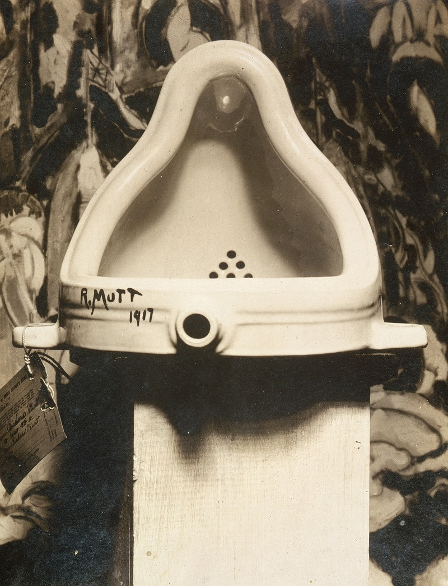
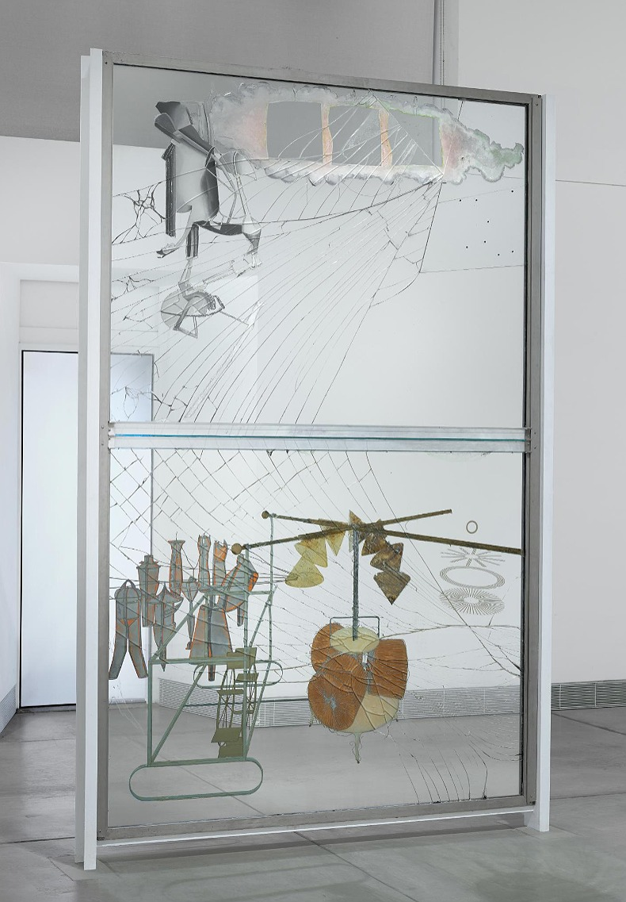

At the very beginning of this semester, while introducing this brief, Narelle spoke about Marcel Duchamp's Fountain. The entire concept of the ready-made artwork is a fascinating exploration into the idea of the copy. But my favourite story about this artist, involves a different artwork; The Bride Stripped Bare by Her Bachelors, Even (The Large Glass) (1915-23). Here is an extract from a speech I did about the artwork, at an exhibition opening in 2022:
I’m sure that most of you here know the work of controversial artist Marcel Duchamp, who reinvented the very way in which we understand the purpose of art in our world. Recently, my dad reminded me of one of my favourite stories about this great artist, the story of his installation The Bride Stripped Bare by Her Bachelors, Even, better known as The Large Glass. Using unconventional materials and techniques to create this immense work which consists of two large glass panels stacked on top of each other, Duchamp felt unsatisfied with his work, that it could never be finished, and left it to gather dust in his studio for years, terming it “definitively unfinished”.
Now maybe I’m just clumsy but I think that if I was tasked with moving this massive, almost 9 metre tall, piece of glass I would definitely break it. I can barely carry a water glass from the table to the dishwasher without chipping or breaking it, and apparently I’m not the only person with this problem. When the large glass was being transported between shows, it was dropped, and it shattered. Naturally, the movers were extremely worried about what Duchamp would say when they told him that the artwork he had spent eight years making was now covered in spidery cracks. But they had to tell him what had happened. And when they did, he was thrilled. He said, finally, it’s finished.
This is the kind of approach that I an trying to have with my work these days. I want the final outcome to be nothing more than a product of the process of creating it. I hope that it is beautiful, but ultimately I want it to include imperfections and flaws. As AI because ubiquitous more people will loose the ability to express themselves, and I think we will see a turn away from perfectionism and minimalism. I think in this project, process, chance and happen stance are going to be the thing that make it - the layers of human touch and reinvention are going to be my layers of copying.
click here to learn more


make space!